ip命令用来显示或操纵Linux主机的路由、网络设备、策略路由和隧道，是Linux下较新的功能强大的网络配置工具。
目录
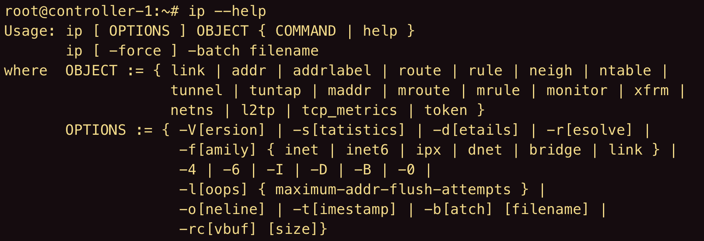
ip link
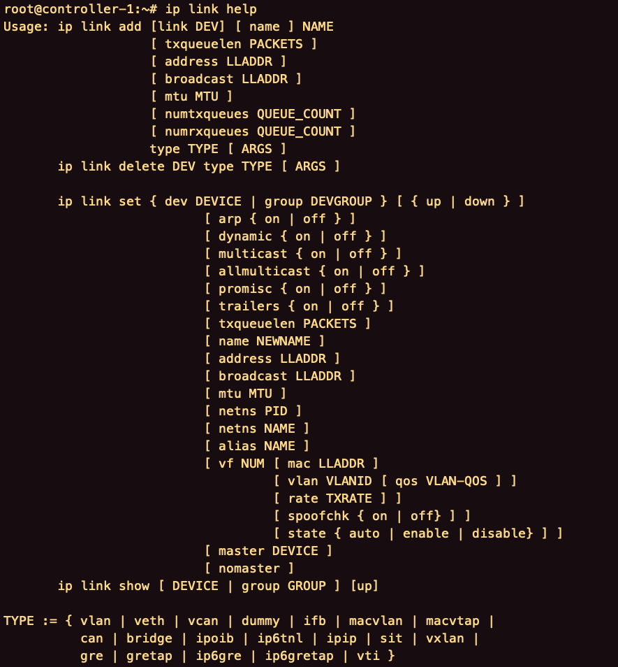
查看当前所有的网络接口的状态
1 | ip link |
启动接口
1 | ip link set qg-3127fe33-2f up |
删除接口
1 | ip link delete qg-3127fe33-2f |
ip addr
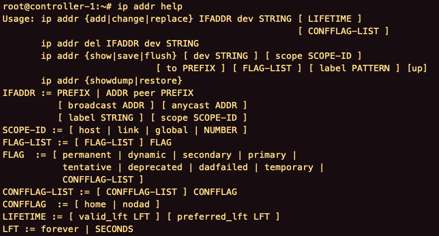
查看所有网络接口的mac地址和ip地址等
1 | ip addr |
查看指定网络接口的mac地址和ip地址等
1 | ip addr show [device] |
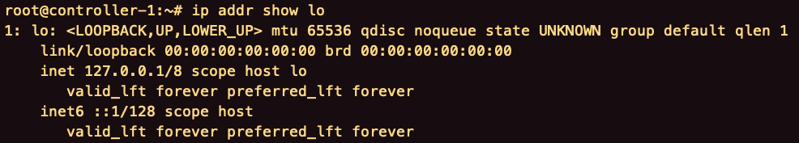
增加ip
1 | ip addr add [ip]/[netmask] dev [interface] |
删除ip
1 | ip addr del [ip]/[netmask] dev [interface] |
清空指定网卡的所有ip
1 | ip addr flush dev [interface] |
ip addrlabel
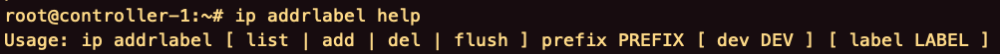
添加别名
1 | ip addr add [ip]/[netmask] dev [interface] label [name] |
删除别名
1 | ip addr del [ip]/[netmask] dev [interface] label [name] |
ip route
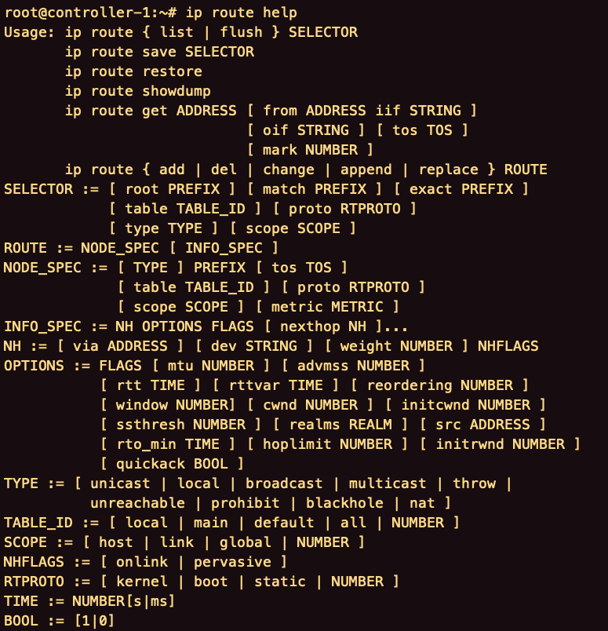
查看所有路由信息
1 | ip route |
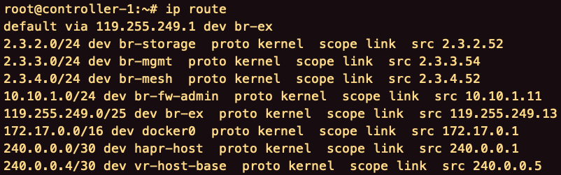
添加路由
添加到达目标主机的路由
1
ip route add [host] via [gateway]
添加到达网络的路由
1
ip route add [network]/[netmask] via [gateway]
添加默认路由
1
ip route add default via [gateway]
删除路由
1 | ip route del [network]/[netmask] |
刷新路由缓存
创建完路由若需要立即生效。
1 | ip route flush table [id] |
路由表
查看路由表
1 | ip route [list|show] table [table-id] |
添加路由
1 | ip route add default via [ip] table [id] |
删除路由
1 | ip route del default table [id] |
ip rule
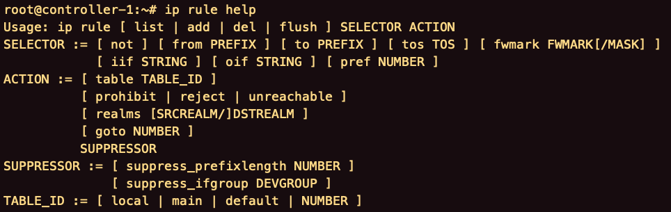
查看路由策略规则
1 | ip rule |
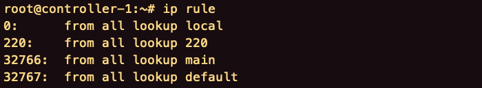
删除路由策略规则
1 | ip rule del [ip]/[netmask] from table [id] |
ip neigh
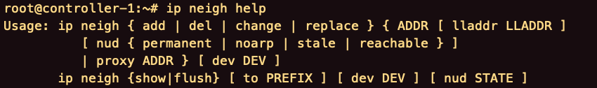
查看接入所在局域网的设备的mac地址。
1 | ip neigh |
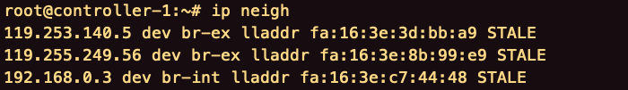
ip netns
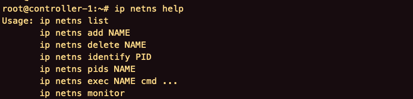
查看所有网络命名空间
1 | ip netns |
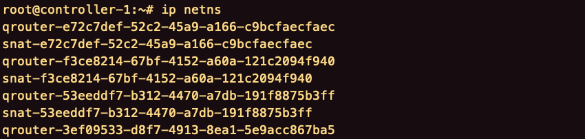
进入网络命名空间
1 | ip netns exec [name] [command] |
options
-V -version
输出ip命令的版本并退出。
-h
输出帮助信息。
-s -stats -statistics
输出更多信息。
-d
输出详细信息。
-l
指定IP地址刷新逻辑将尝试的最大循环次数，默认是10.
-f -family
指定要使用的协议族。协议可以是一个inet、intet6、bridge、ipx、dnet或者link。
-4
是-family inet的简写。
-6
是-family inet6的简写。
-0
是-family link的简写。
-I
是-family ipx的简写。
-o -oneline
单行输出。
-n -netns
交换机的IP到指定的网络空间netns。
-r -resolve
使用系统名称解析来打印DNS名称而不是主机地址。
-t
使用监视器选项时显示当前时间。
-a -all
对所有的对象执行指定的命令，这取决于命令是否支持这个选项。
-rc -rcvbuf（size）
设置Netlink套接字接收缓冲区的大小设置，默认为1MB。
ss -lnt
lsof -p